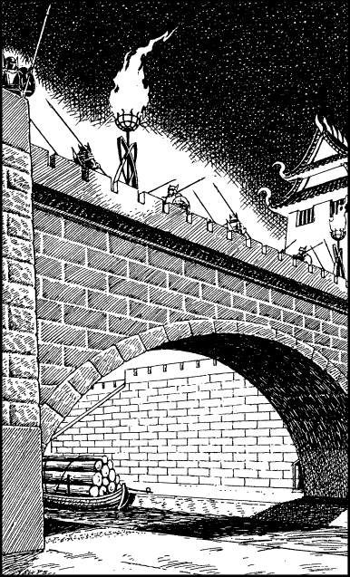

220
The rolling plain to the west of Bakhasa is a bleak and barren steppe that is studded with countless thousands of sawn-off tree stumps. Once this region was part of the Great Forest of Kelderwood, yet in recent times the ruler of Bhanar, Autarch Sejanoz, has commanded the Bakhasians to harvest the forest’s valuable hardwood and dispatch it downstream to feed the insatiable imperial shipyards of Otavai. Travelling on foot, the stumps are no obstruction to your progress and you are able to press on without stopping until late in the afternoon. As you crest a ridge of high ground, you spot a troop of horsemen escorting a line of wagons laden with timber. They are less than a mile distant and they appear to be heading towards a settlement on the banks of the River Tehda. You wait and watch them until they are dots on the horizon before continuing your trek towards the city of Bakhasa.
You are within 20 miles of Bakhasa when dusk begins to darken the gloomy sky. Karvas requests that you stop and rest awhile before making a final push for the city. You are feeling hungry after your long day’s march and you readily agree. (Unless you possess the Discipline of Grand Huntmastery, you must now eat a Meal or lose 3 ENDURANCE points.)
Night falls within an hour of you resuming your trek, yet the distant lights of Bakhasa and its surrounding settlements enable you to stay on course and maintain an impressive pace. The city is lit by hundreds of fiery beacons which mark the outline of its ancient perimeter wall and angular watchtowers. These fires also illuminate the surface of the River Tehda which passes through the centre of Bakhasa. To the south of the city, lines of tethered barges stacked high with logs lie moored along both of its paved banks. Under cover of the night, you are able to move through the outlying settlements without being seen. When at last you hear a bell in the city tolling the midnight hour, you find yourself upon a knoll overlooking a rutted road which approaches Bakhasa’s west gate. Using your night vision, you scan the high perimeter wall and note the positions of guards posted around its tiled parapet. They are greatest in number above a wide stone archway where the glimmering river flows out of the city. Prince Karvas is eager to enter the city before dawn and he asks you to choose the way. Aware that it may prove easier to find and take some horses while most of Bakhasa’s inhabitants are still asleep, you scan the perimeter wall once more and consider how best you can pass beyond it.

If you wish to attempt to enter Bakhasa by way of its west gate, turn to 311.
If you decide to attempt entry to the city by way of the river arch, turn to 94.